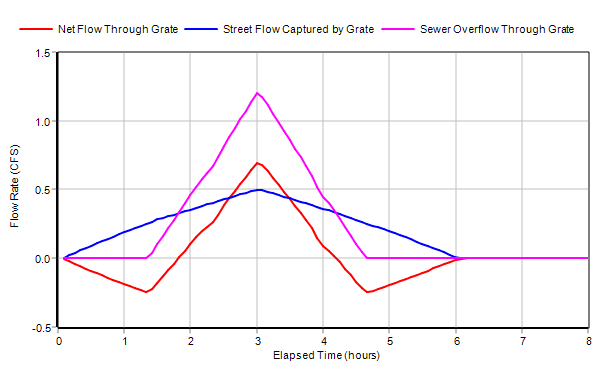
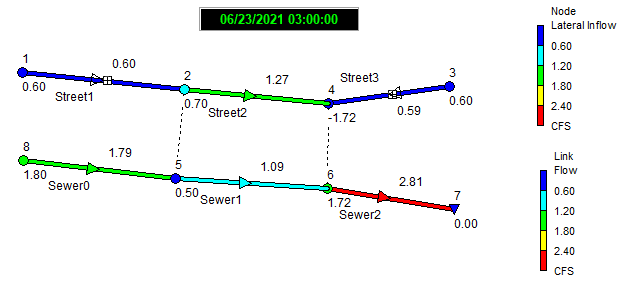

When a portion of the sewer system becomes surcharged there is the possibility that flows will be high enough to overflow an inlet's sewer receptor node. When this happens SWMM computes the inlet's net flow capture as the difference between the normal flow capture and the sewer overflow. If this net flow is negative it results in water flowing out of the sewer node into the inlet's street node.
Our original example drainage system can be modified as follows to illustrate this effect:
| 1. | Add a new sewer pipe, Sewer0, upstream of Sewer1 with its same properties and give its start node an elevation of 98 feet and a maximum depth of 4 feet. |
| 2. | Add an inflow to the start node of Sewer0 with the same time series as the street inflows but with a scale factor of 3. |
| 3. | Reduce the diameter of Sewer1 to 0.5 feet. |
| 4. | Run the analysis. |
These changes cause Sewer1 to reach its flow capacity when system inflow is high enough thus producing an overflow at its upstream node 5. This node receives street flow captured by the Grate inlet in Street1. When the sewer overflow exceeds the captured street flow there is a net addition of flow back onto the street. This behavior is reflected in the following time series graph:

And here is what the conduit flows and lateral flow exchanges look like at the time of peak system inflow (flow values are shown for links and lateral inflow values are shown next to nodes):

Although the Grate inlet in Street1 captures 0.5 cfs of street flow, the overflow from its sewer node 5 is large enough to create a net backflow through the inlet of 0.7 cfs. This results in Street2 seeing an increase in flow instead of having its flow reduced by the amount captured by the Grate inlet.